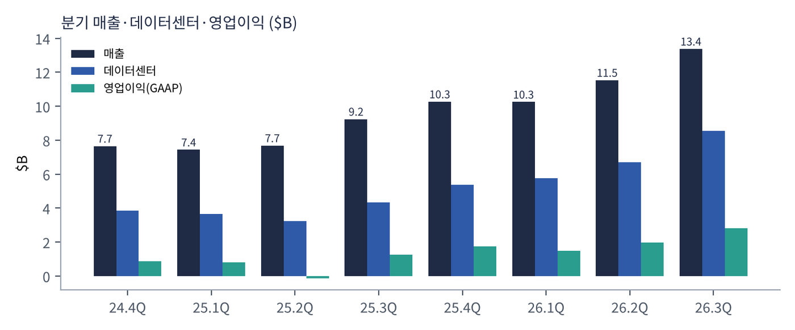
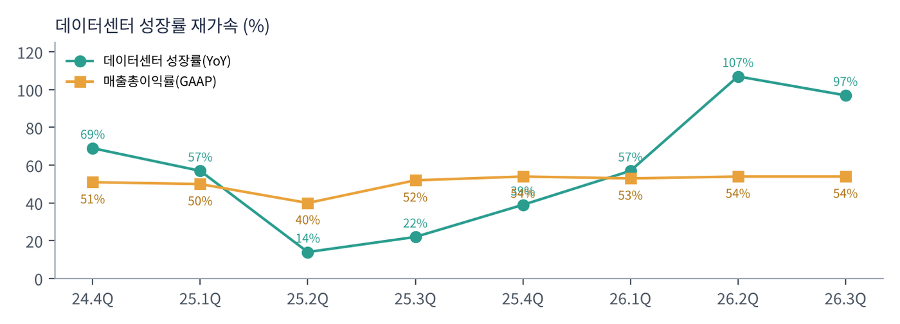
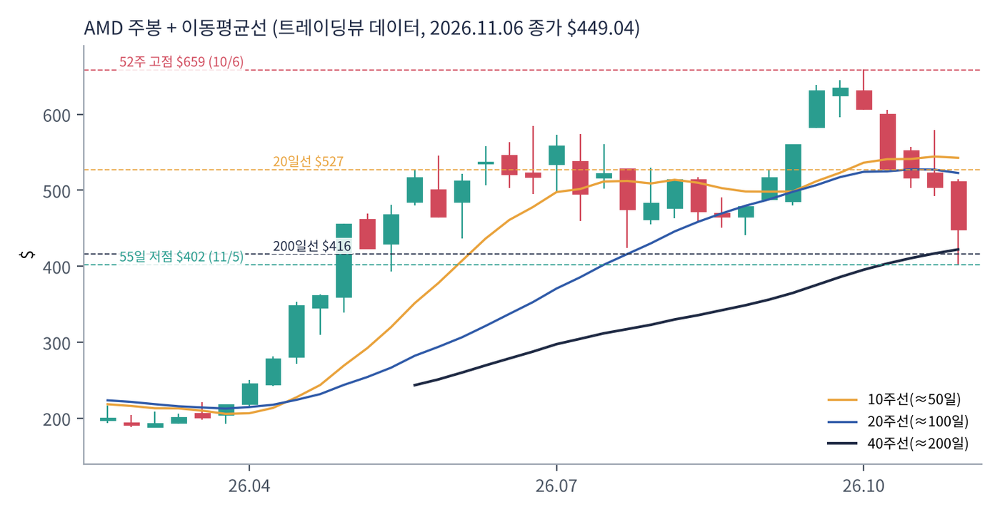
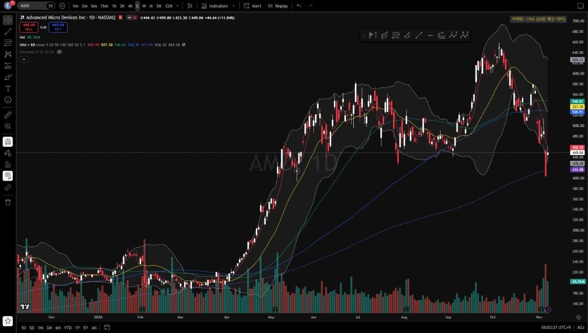
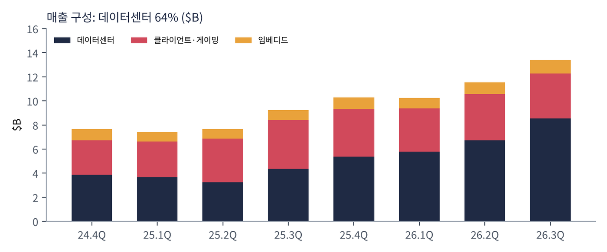

AMD는 PC·서버용 CPU(라이젠·EPYC)와 GPU(라데온·인스팅트), FPGA(자일링스 인수)를 설계하는 반도체 회사다. 공장 없이 TSMC에 생산을 맡긴다. 지금은 AI 데이터센터용 GPU와 서버 CPU가 회사의 중심이다.
| 항목 | 내용 |
|---|---|
| 종목 | Advanced Micro Devices, Inc. (AMD) · 반도체 · 1969년 설립 · 본사 캘리포니아주 산타클라라 |
| 경영진 | 리사 수 회장 겸 CEO / 진 후 CFO |
| 시가총액 | 약 $733B (11/6 종가 기준) · 희석 주식 수 약 16.6억 주 |
| 최근 분기(3Q26) | 매출 $13.4B(+45%), GAAP 순이익 $2.4B, GAAP EPS $1.46, 비GAAP EPS $2.09 |
| 밸류에이션 | TTM PER 101배(GAAP). 고객 워런트 평가손실·인수 상각으로 GAAP 이익이 작게 잡힘. 비GAAP 기준 선행 PER은 40배 안팎 |
| 재무 | 현금·단기투자 $15.8B, 총부채 $7.1B(3분기에 $4.7B 신규 발행) |
| 분기 | 매출 | YoY | 매출총이익률 | 영업이익 | 순이익 | EPS | 데이터센터 | FCF |
|---|---|---|---|---|---|---|---|---|
| 2024.4Q | $7.66B | +24% | 51% | $0.87B | $0.48B | $0.29 | $3.86B | $1.09B |
| 2025.1Q | $7.44B | +36% | 50% | $0.81B | $0.71B | $0.44 | $3.67B | $0.73B |
| 2025.2Q | $7.69B | +32% | 40% | -$0.13B | $0.87B | $0.54 | $3.24B | $1.18B |
| 2025.3Q | $9.25B | +36% | 52% | $1.27B | $1.24B | $0.75 | $4.34B | $1.53B |
| 2025.4Q | $10.27B | +34% | 54% | $1.75B | $1.51B | $0.92 | $5.38B | $2.08B |
| 2026.1Q | $10.25B | +38% | 53% | $1.48B | $1.38B | $0.84 | $5.78B | $2.57B |
| 2026.2Q | $11.54B | +50% | 54% | $1.99B | $2.30B | $1.38 | $6.72B | $1.56B |
| 2026.3Q | $13.38B | +45% | 54% | $2.83B | $2.43B | $1.46 | $8.55B | $0.55B |

2025년 2분기가 바닥이었다. 미국의 대중국 수출 통제로 MI308 GPU 재고 손실(약 $8억)을 반영해 매출총이익률이 40%로 떨어지고 영업적자를 냈다. 데이터센터 성장률도 +14%로 꺾였다. 이후 MI350 출하와 EPYC 수요로 회복했고, 2026년 2분기부터 MI450과 헬리오스 랙이 더해지며 데이터센터 성장률이 +107%·+97%로 뛰었다.
GAAP 숫자에 큰 잡음이 있다. 3분기 GAAP 기타비용 $9억은 일부 고객(오픈AI 등 대형 고객과의 공급 계약)에게 발행한 워런트의 공정가치 변동 손실 $11억 때문이다. AMD 주가가 오르면 이 손실이 커지는 구조다. 반대로 법인세 혜택이 이를 일부 상쇄했다. 인수 무형자산 상각($5억)도 매 분기 들어간다. 그래서 회사의 본업 수익력은 비GAAP 영업이익률(29%)로 보는 경우가 많다.
3분기 FCF가 $5.5억으로 급감했다. 매출이 늘었는데 현금이 줄어든 것은 재고(+$30억, $115억)와 매출채권(+$19억)이 급증했기 때문이다. 4분기 헬리오스·베니스 양산을 위한 선제 재고로 볼 수 있지만, 확인이 필요한 부분이다.

| 항목 | 가이던스 | 비교 |
|---|---|---|
| 매출 | 약 $17B ±3% | 전년 대비 약 +66%, 전 분기 대비 약 +27% |
| 비GAAP 매출총이익률 | 약 55% | 3분기 56%에서 소폭 하락 — GPU 비중 확대 |
트레이딩뷰 AMD 일봉 300개(2025.8 ~ 2026.11.6)와 주봉으로 계산했다. 결론부터 말하면 단기 추세는 무너졌지만 장기 추세는 살아 있다. 1년 동안 3.5배 오른 뒤의 조정 국면이다.


위: 주봉 재구성 차트. 아래: 트레이딩뷰 일봉 캡처(작도 없이 이동평균선·볼린저밴드만 표시).
| 이동평균 | 값 | 종가 대비 | 해석 |
|---|---|---|---|
| 5일선 | $458.6 | -2.1% | 11/5 -17.3%, 11/6 +11.0% |
| 20일선 | $527.3 | -14.8% | 10월 중순 이후 하락 전환 |
| 50일선 | $546.8 | -17.9% | 9~10월 급등의 중심 |
| 100일선 | $526.9 | -14.8% | 20일선과 겹침 — $527~547 저항대 |
| 200일선 | $416.0 | +7.9% | 11/5 장중 $402까지 밀렸다가 회복 |
배열은 50일 > 20일 ≈ 100일 > 5일 > 주가 > 200일이다. 주봉으로 보면 2026년 3월 저점($188)에서 4~6월 AI GPU 기대로 $580대까지 3배, 7~8월 $440~575 박스, 9월 MI450 출시와 함께 $659(10/6)까지 신고가, 이후 한 달 동안 -39%(11/5 장중 $402)까지 밀렸다. 11월 3일 실적 발표는 가이던스 상단을 넘었지만, 11/5 반도체 동반 급락에 하루 -17%를 기록했다.
| 규칙 | 기준 | 현재 값 | 신호 |
|---|---|---|---|
| 장기 추세 필터 | 종가 vs 200일선 | $449.0 > $416.0 | 매수 |
| 중장기 교차 | 50일선 vs 200일선 | $546.8 > $416.0 | 매수 |
| 단기 교차 | 20일선 vs 50일선 | $527.3 < $546.8 | 매도 |
| 돈키언 채널 | 55일 고가·저가 | 11/5 $402.1로 55일 최저가 | 매도 |
| 1개월 모멘텀 | 21거래일 수익률 | -27.7% (기준 $620.7) | 매도 |
| 3개월 모멘텀 | 63거래일 수익률 | -4.4% (기준 $469.6) | 매도 |
| 6개월 모멘텀 | 126거래일 수익률 | -1.4% (기준 $455.2) | 매도 |
| 12개월 모멘텀 | 252거래일 수익률 | +75.2% (기준 $256.3) | 매수 |
| 종합 (8개 평균) | -0.25 | 약한 매도(중립 근접) | |
해석: 신호가 정확히 반으로 갈렸다. 장기 신호 3개(200일선·50/200·12개월)는 매수, 단기·중기 5개는 매도다. 중요한 것은 3개월(-4.4%)·6개월(-1.4%) 모멘텀이 매도이긴 하지만 기준가와의 차이가 아주 작다는 점이다. $470만 넘으면 두 신호가 매수로 바뀌어 종합 +0.25가 된다. 다만 변동성이 매우 크다. 14일 ATR이 $38.0(주가의 8.5%)로, 하루 ±$40이 보통인 구간이다.
| 가격 | 무엇이 바뀌나 | 의미 |
|---|---|---|
| $455 ~ 470 | 6개월·3개월 기준가 | 회복 시 2개 매수 전환 → 종합 +0.25 |
| $527 ~ 547 | 20·100·50일선 | 단기 추세 회복 |
| $416 | 200일선 | 이탈 시 장기 추세 필터 매도 → -0.50 |
| $402 이탈 | 55일 저점 붕괴 | 피보나치 50%($423) 이탈 확인, $368(61.8%)까지 열림 |
| 구분 | 가격대 | 근거 |
|---|---|---|
| 저항 2 | $527 ~ 547 | 20·50·100일선 |
| 저항 1 | $470 ~ 489 | 3개월 기준가, 11/4 종가 $489 |
| 지지 1 | $402 ~ 423 | 200일선($416), 11/5 저점, 피보나치 50%($423) |
| 지지 2 | $368 | 3월 저점 → 10월 고점의 피보나치 61.8% |
기본 판단: 성장 가속 + 장기 추세 유지 + 단기 과매도. 4분기 가이던스(+27% QoQ)는 12개 종목 중 엔비디아와 함께 가장 공격적이다. 200일선을 지키는 한 '상승 추세 안의 급한 조정'으로 본다. 다만 GAAP PER 101배, 비GAAP 기준으로도 높은 배수여서 변동성이 크고, 손절 원칙이 다른 종목보다 더 중요하다.
| 가격대 | 시나리오 | 대응 |
|---|---|---|
| $547 이상 | 단기 추세 복귀 | 2차 익절, 잔여 추세 추종 |
| $470 종가 회복 | CTA 플러스 전환 | 추세 매수 50% 추가 |
| $402 ~ 449 | 200일선 지지 테스트 | 분할 매수 50% |
| $385 이하 종가 | 장기 추세 훼손 | 손절 |
| $368 | 피보나치 61.8% | 관망 |

| 사업부 | 돈을 버는 방식 | 3Q26 매출 | 성장 | 영업이익 |
|---|---|---|---|---|
| 데이터센터 | 인스팅트 AI GPU(MI350·MI450), 헬리오스 랙 시스템, EPYC 서버 CPU(5·6세대 '베니스'), AI NIC, 데이터센터용 FPGA | $8.55B | +97% | $2.88B |
| 클라이언트 | 라이젠 PC CPU(노트북·데스크톱), 라이젠 AI 맥스 | $2.95B | +7% | $0.57B |
| 게이밍 | 콘솔용 세미커스텀 칩(소니·마이크로소프트), 라데온 GPU | $0.77B | -40% | |
| 임베디드 | 산업·자동차·항공우주·통신용 FPGA·임베디드 프로세서 | $1.11B | +29% | $0.45B |
AMD는 1년 만에 'PC 회사'에서 '데이터센터 회사'가 됐다. 1년 전 데이터센터 비중은 47%였는데 지금 64%다. 영업이익으로 보면 더 극적이다. 3분기 사업부 영업이익 합계 $3.9B 중 데이터센터가 $2.9B(74%)다. 데이터센터 영업이익률은 34%로 1년 전(25%)보다 9%p 올랐다.
게이밍의 급감은 의도된 결과에 가깝다. 콘솔 사이클 후반부로 세미커스텀 매출이 줄었고(-40%), 회사는 같은 TSMC 생산능력을 데이터센터 GPU에 우선 배분하고 있다. PC CPU는 +7%로 견조했지만 메모리 가격 상승에 따른 PC 수요 둔화가 위험 요인이다.
리사 수 CEO가 그리는 AMD의 목표는 "초지능(superintelligence) 인프라의 전체 스택을 개방형으로 제공하는 회사"다. 3분기 발표문의 하이라이트는 거의 전부 이 문장으로 정리된다.
| 층 | AMD가 하는 일 (3Q26 발표 기준) |
|---|---|
| 랙 시스템 | 헬리오스: MI450 GPU + 6세대 EPYC CPU를 묶은 랙. 앤스로픽·메타·마이크로소프트·오픈AI·오라클 클라우드가 첫 시스템에서 모델과 워크로드를 운영 중. HPE가 '헬리오스 by HPE'로 판매(벌터 첫 도입) |
| 설계도 | 헬리온 레퍼런스 아키텍처: 고객이 워크로드에 맞게 CPU·GPU 비율을 고르는 개방형 에이전틱 랙 설계 |
| 소프트웨어 | ROCm 10: CUDA의 대안. AI 네이티브 개발 환경(ROCm.AI) |
| 모델 연구 | 월드랩스 인수 합의 — 모델 연구 역량을 직접 확보 |
| 추론 칩 | 탈라스 인수 합의 — 특화 추론 실리콘 기술 |
| 엣지·PC | 라이젠 AI 헤일로(로컬 AI 개발), 1조 파라미터 모델을 로컬에서 돌리는 스레드리퍼 헤일로 스테이션 |
엔비디아와 비교하면 전략이 분명하다. 엔비디아가 '닫힌 생태계(CUDA·NVLink)'로 전 층을 장악한다면, AMD는 '개방형'을 무기로 엔비디아에 종속되기 싫은 고객을 모은다. 대형 고객에게 워런트(주식 매수권)까지 주며 공급 계약을 맺은 것도 같은 맥락이다. 고객이 AMD의 성공에 직접 이해관계를 갖게 만드는 전략이다.
| 주제 | 회사의 말 (3Q26 발표문) | 읽는 법 |
|---|---|---|
| 3분기 | "매출이 가이던스 상단을 넘었고 데이터센터 매출이 전년 대비 거의 두 배가 됐다"(리사 수) | MI450 첫 분기 |
| 수요 | "인스팅트와 EPYC에 대한 수요가 계속 강해지고 있다" | GPU·CPU 동반 성장 |
| 4분기 | "헬리오스와 '베니스' 생산을 늘리면서 4분기 성장이 더 빨라질 것" | 가이던스 +27% QoQ |
| 중장기 | "앞으로 수년간 매우 강한 매출 성장과 이익률 확대를 지속할 수 있다고 확신한다" | 다년 계약 기반 |
| 레버리지 | "매출 +45%에 비GAAP EPS +74% — 데이터센터 규모 확대가 영업 레버리지를 보여준다"(진 후 CFO) | 이익이 매출보다 빠르게 |
AMD의 수요 신호는 엔비디아와 다른 각도에서 같은 결론을 준다. 엔비디아의 고객이 '더 많은 엔비디아'를 원한다면, AMD의 고객은 '엔비디아 외의 선택지'를 원한다. 오픈AI·메타·마이크로소프트·앤스로픽이 동시에 헬리오스를 돌린다는 것은 대형 AI 연구소들이 두 번째 공급원을 진지하게 키우고 있다는 뜻이다. 동시에 AMD 발표문의 위험 요인에 '메모리 공급'이 명시된 점은, HBM 부족이 AMD 출하량의 상한이 될 수 있음을 보여 준다.
MI350에서 MI450·헬리오스 랙으로 세대 교체. 랙 단위 판매는 매출 단가를 크게 높이지만 매출총이익률은 낮출 수 있다(4분기 비GAAP 55% 가이던스). 유럽 LUMI-AI 슈퍼컴퓨터에 MI430X 채택.
6세대 '베니스' 양산. 오라클 OCI E7 인스턴스, 구글·마이크로소프트 스토리지 최적화 인스턴스. AI 에이전트 시대에 모델 주변의 CPU 연산이 늘면서 서버 CPU 수요도 커진다.
라이젠 모바일 CPU는 +7%, 게이밍은 콘솔 사이클 후반으로 -40%. 로컬 AI PC(라이젠 AI 맥스 PRO 400)가 새 수요처다.
항공우주·방산·자동차·통신·산업용이 고르게 회복. 자율주행 트럭(코디악 AI), 우주용 적응형 SoC 등 피지컬 AI로 확장.
| 경쟁/리스크 | 내용 | 강도 |
|---|---|---|
| 엔비디아 | 매출 7배 규모, CUDA 생태계, 베라 루빈 전면 양산, 공급 약정 $279B로 부품 선점 | 높음 |
| 공급 제약 | TSMC 첨단 공정·CoWoS, HBM 메모리 공급(발표문 위험 요인에 명시) | 중간~높음 |
| 고객 워런트 | 주가가 오르면 GAAP 손실이 커지고 희석 가능성. 계약 조건 세부 공개 제한 | 중간 |
| 현금흐름 | 재고·매출채권 급증으로 3분기 FCF $5.5억 | 중간 |
| 수출 통제 | 2025년 MI308 손실 사례. 중국 매출 재개 불확실 | 참고 |
4분기 실적(1월 말)에서 매출 $17B와 데이터센터 $10B 돌파가 확인 포인트다. 주가는 200일선을 지키는 한 장기 추세가 유효하고, $470 회복 시 CTA 신호도 플러스로 돌아선다.
헬리오스가 대형 AI 연구소의 표준 '두 번째 공급원'으로 자리 잡으면 데이터센터 매출은 엔비디아와의 격차를 좁히며 고성장을 이어 갈 수 있다. 관건은 소프트웨어(ROCm) 생태계와 HBM·CoWoS 확보다.